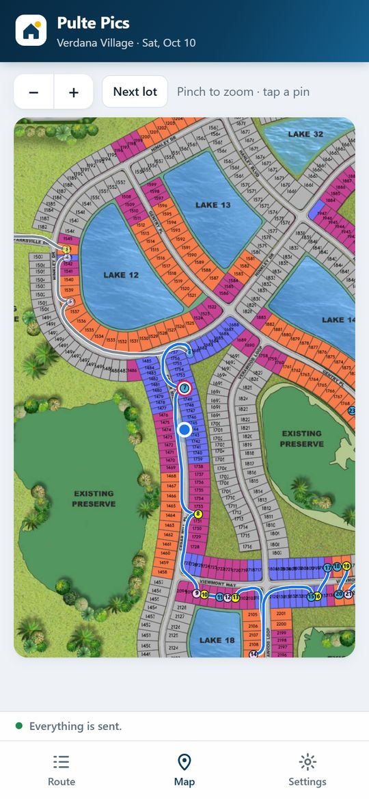
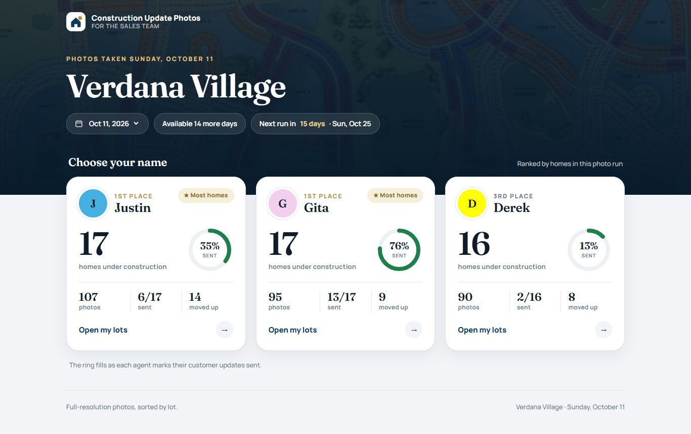
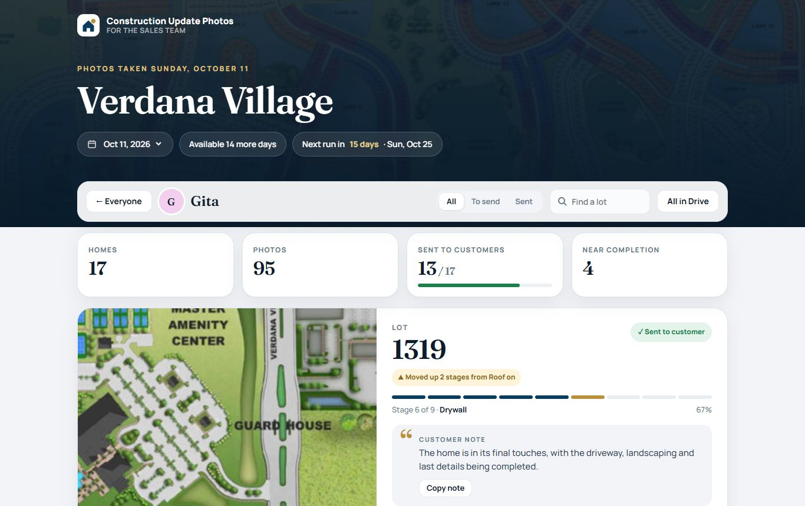

Your stars turn into my shot list.
When you send me your starred map, the app finds every star, where it sits and what color it is, so it knows whose lot it is. It lines each screenshot up with the master site map and reads the lot number under the star.
- Every lot number gets checked against all 2,400 lots on the master map.
- If a star sits between two lots or just off the edge of a screenshot, it gets flagged so I can double-check it.
- I see a snapshot of every star next to its lot number before I head out.

The quickest way through the neighborhood.
The app plans my route on the actual streets of Verdana Village, around the lakes and preserves, in the order I'd drive it. The site map is lined up with real GPS, so it always knows where I am.

A live map walks me to each house.
The next lot is circled on a live map with my position, which way I'm facing and the road to get there. When I'm at the house, the screen turns green.
- Rapid-fire camera: every tap saves a photo, always in landscape.
- In low light I switch to the iPhone camera with Night mode.
- I pick the construction stage and the customer note writes itself.
Uploaded before I get to the next house.
Photos upload in the background at full resolution, two at a time, and each one gets a green check once it's saved. When the last lot is done, you get an email that the run is complete.
Everything you need, sorted by lot.
Your page shows every home you have in the run, its stage, a note you can send your customer and the full-resolution photos. Check off each update as you send it and your ring fills up.


I built it from scratch for Verdana Village.
Questions or ideas?
I built this to make your Sunday updates easy. If something would make it better for you or your customers, let me know.
Back to my photos →Screens shown with sample photos.